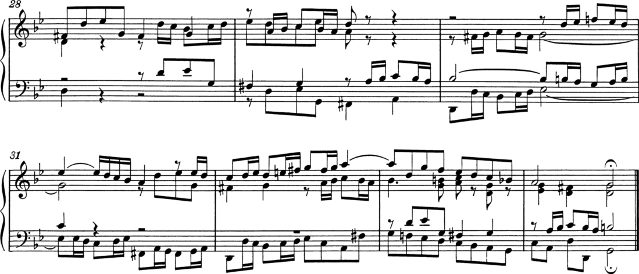
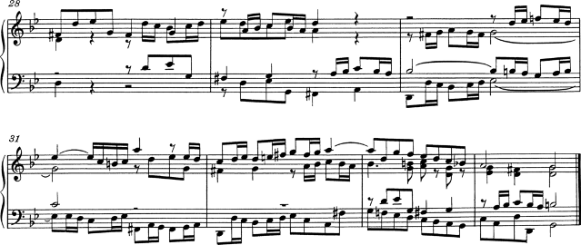
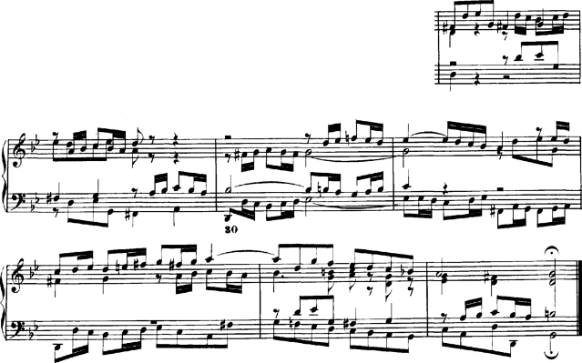

| [ << A kottaszedés ] | [Címoldal][Tartalom][Tárgymutató][ ? ] | [ Irodalomjegyzék >> ] | ||
| [ < Putting LilyPond to work ] | [ Fel: A kottaszedés ] | [ Irodalomjegyzék > ] | ||
1.6 Engraved examples (BWV 861)
This section contains four reference engravings and two software-engraved versions of Bach’s Fugue in G minor from the Well-Tempered Clavier, Book I, BWV 861 (the last seven measures).
Bärenreiter BA5070 (Neue Ausgabe Sämtlicher Werke, Serie V, Band 6.1, 1989):
Bärenreiter BA5070 (Neue Ausgabe Sämtlicher Werke, Serie V, Band 6.1, 1989), an alternate musical source. Aside from the textual differences, this demonstrates slight variations in the engraving decisions, even from the same publisher and edition:
Breitkopf & Härtel, edited by Ferruccio Busoni (Wiesbaden, 1894), also available from the Petrucci Music Library (IMSLP #22081). The editorial markings (fingerings, articulations, etc.) have been removed for clearer comparison with the other editions here:

Bach-Gesellschaft edition (Leipzig, 1866), available from the Petrucci Music Library (IMSPL #02221):
Finale 2008:

LilyPond, version 2.19.65:
| [ << A kottaszedés ] | [Címoldal][Tartalom][Tárgymutató][ ? ] | [ Irodalomjegyzék >> ] | ||
| [ < Putting LilyPond to work ] | [ Fel: A kottaszedés ] | [ Irodalomjegyzék > ] | ||
Más nyelvek: English, deutsch, español, français, italiano.
About automatic language selection.